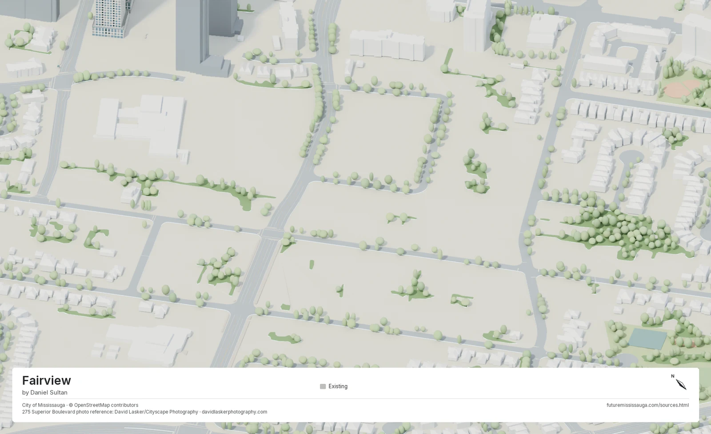
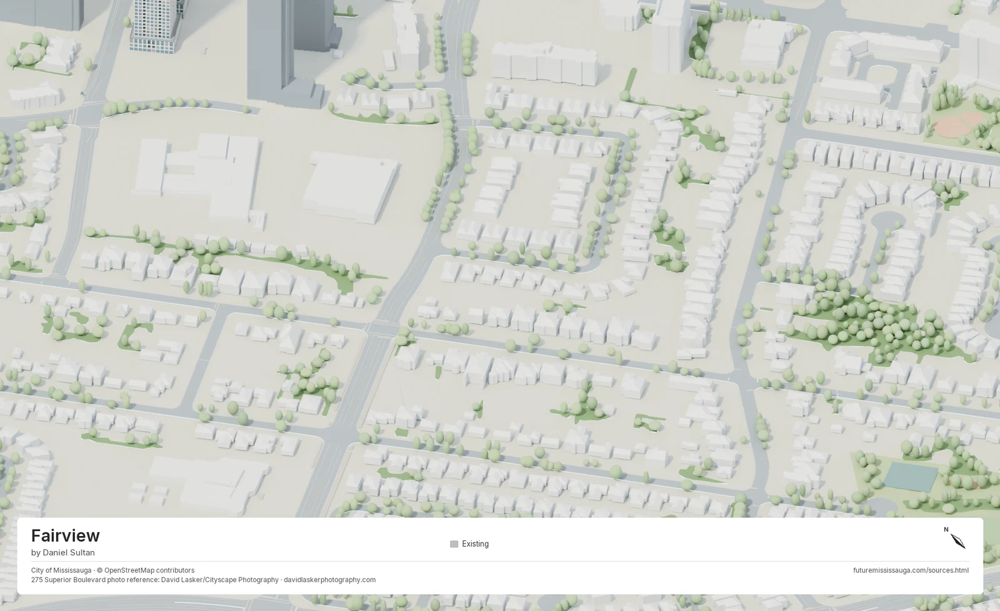
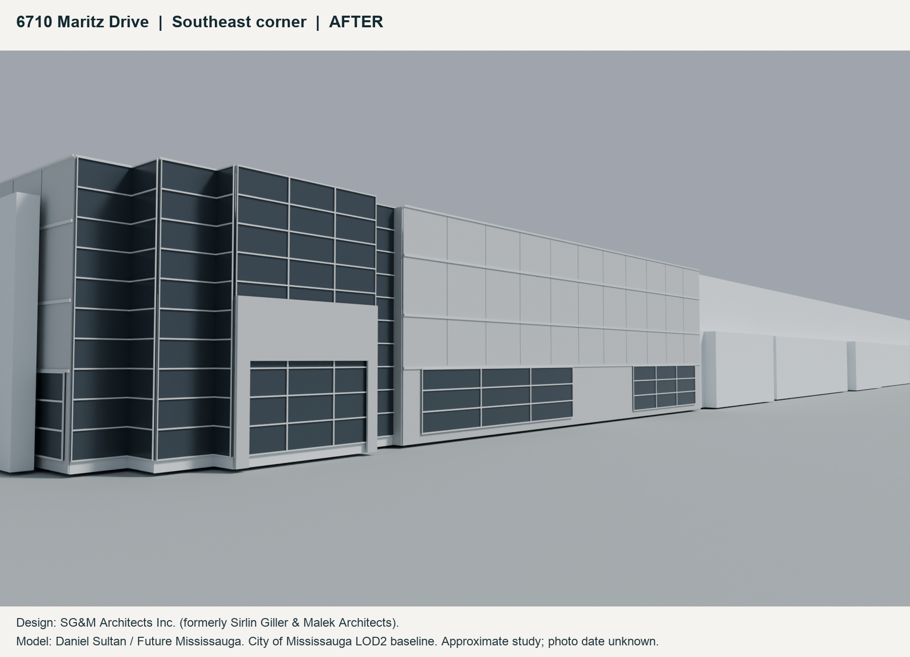

Model revisions
See how drawings and photographs changed each building, from rooflines to storefronts.
Fairview: more neighbourhood detail
Existing homes around Fairview have been added to the Citywide model.






Facade study
275 Superior Boulevard
An approximate study of the glazing, cladding and entrance canopy.
Earlier comparison
Open current rendering →


Heartland & Gateway
6710 Maritz Drive
I used SG&M’s reference photograph to add the folded glazing, entrance frame and pale concrete panels at the southeast corner.
Earlier comparison
Open current rendering →





Zonta Meadows Park · Artwork study
Gala Gateway
Gabriel Fain pointed me to photographs of Gala Gateway, the artwork he created with Harley Valentine.
Earlier comparison
Open current rendering →


Dixie & Applewood · First exterior study
1355 Winding Trail
The exterior references shared by KMA helped me add the tower, glazed front bays and lower green roofs that were missing from the City model.
Earlier comparison
Open current rendering →


Cooksville · Updated exterior study
45 Paisley Boulevard West
Panoramic Properties shared another view of the building, so I could work on the opposite end.
Earlier comparison
Open current rendering →


Cooksville · Updated exterior study
2200 Sherobee Road
I used Panoramic Properties’ photographs to refine the northwest side facing Sherobee Road and correct the oversized rooftop block.
Earlier comparison
Open current rendering →


City Centre · New partial artwork study
Conference at the Council House
The installation photograph shared by Maxwell Stephens helped me build the tower and five birds visible on and around it.
Earlier comparison
Open current rendering →


Clarkson · Updated exterior study
Benares House
The museum photographs helped me work on the kitchen gable, basement windows and small drainage details.
Earlier comparison
Open current rendering →


Clarkson · Updated exterior study
Benares Visitor Centre
The reference photographs made the raised end gables, entrance roof and dark-green trim much clearer.
Earlier comparison
Open current rendering →


Clarkson · Updated exterior study
The Anchorage
The shared photographs helped me refine the dormers, dark shutters, entrance and siding.
Earlier comparison
Open current rendering →


Clarkson · Updated exterior study
Bradley Log Cabin
The photographs revealed a long gabled roof and a smaller grey addition.
Earlier comparison
Open current rendering →


Clarkson · Updated exterior study
Bradley Barn
The museum references helped me add the timber siding, door and roof finish to the simple mapped barn.
Earlier comparison
Open current rendering →


Streetsville · Updated exterior study
Leslie Log House
The photograph shared by Streetsville Historical Society helped me give the house its weathered log walls and more recognizable window and door details.
Earlier comparison
Open current rendering →


Port Credit · New lighthouse study
Port Credit Lighthouse
The photographs shared by Port Credit BIA helped me study the lighthouse and its red-and-white exterior.
Earlier comparison
Open current rendering →


Streetsville · New frontage study
228 Queen Street South
A Streetsville photograph shared by the City helped me add the arched upper windows, pale storefront trim and side dormers of the Eaton-Bentley-Ladner building.
Earlier comparison
Open current rendering →


Clarkson
NRC Advanced Materials Research Facility
The existing laboratory now has its photographed window bands, white fins, entrance and open rooftop frame.
Earlier comparison
Open current rendering →


Erindale
W.G. Davis Meeting Place · canopy study
The open entrance canopy and its columns are added to the existing campus, using the shared photographs and mapped roof outline.
Earlier comparison
Open current rendering →


Clarkson
Bell Gairdner Estate
The main and coach houses are restored to the city model, with source-based roof forms and photo-informed windows, shutters, dormers and entrance details.
Earlier comparison
Open current rendering →


Dixie & Applewood
West End Buddhist Temple
The temple has its photographed tiered maroon roof, porch, windows and warm wall finishes, anchored to the City outline and roof-height limit.
Earlier comparison
Open current rendering →


Lakeview
Rise at Stride
Explore this existing development in the Lakeview city model.
Lakeview
Stride Townhomes
Explore this existing development in the Lakeview city model.
Mississauga
Churchill Meadows · log play reference study
The timber log-play landmark is shown in Mattamy Sports Park, with its supported colours and posts registered to the existing play surface.
Earlier comparison
Open current rendering →


Malton
Paul Coffey Park · castle reference study
The rebuilt wooden castle has its blue and red roofs, open decks, pickets and slide, set in Paul Coffey Park.
Earlier comparison
Open current rendering →


Uptown & Hurontario
Fairwinds Park · HMCS Pinnacle study
HMCS Pinnacle has its photographed wooden hull and cabin, rope details, yellow portholes and red flag.
Earlier comparison
Open current rendering →


Clarkson · optional earlier-plan study
Creekside Apartments
Creekside’s current 51-home project is under construction.
View optional study in city map →
Earlier comparison
Open current rendering →